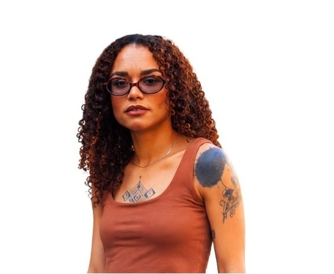
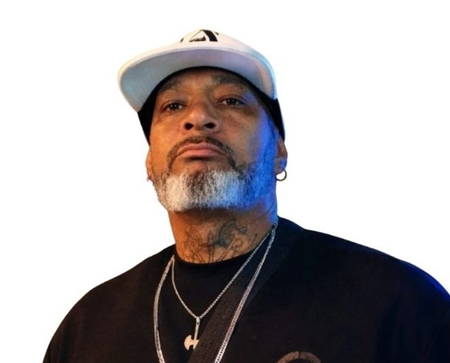
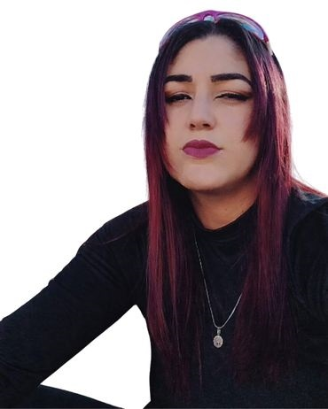

CULTURA • MÚSICA • TERRITÓRIO
CULTURA
QUE SE MOVE.
Um movimento cultural que conecta artistas, territórios e oportunidades através da música, da arte e da cultura periférica.
ARTISTAS QUE
OCUPAM.
VOZES QUE
TRANSFORMAM.
SOBRE O
STUDIO
Mais do que um espaço físico, o Studio Itinerante é uma ideia em movimento.
O Studio Itinerante é um projeto cultural idealizado por Gaabi Vieira, artista, cantora, compositora e produtora cultural, criado a partir da necessidade de aproximar a produção artística das pessoas e dos territórios onde a cultura acontece todos os dias.
O projeto conecta artistas, produtores, músicos e comunidade, valorizando artistas independentes e criando oportunidades para que novas vozes possam ocupar espaços, serem ouvidas e desenvolverem seus trabalhos.
A PERIFERIA TEM VOZ.
TEM TALENTO.
TEM PRODUÇÃO.
TEM HISTÓRIA.
NOSSOS
PROJETOS
STUDIO ITINERANTE APRESENTA
VOZES DA
PERIFERIA
Um encontro artístico voltado à valorização da cultura urbana e periférica através da música e da conexão entre diferentes artistas.
CONHECER PROJETO →QUEM
CONSTRÓI
Três trajetórias diferentes. Um propósito coletivo.

GAABI VIEIRA
MC • COMPOSITORA
PRODUTORA CULTURAL

ELCIO ALVES
RAPPER • COMPOSITOR
RECONSTRUÇÃO EM VERSOS

SENSI MILLA
MC • COMPOSITORA
PRODUTORA CULTURAL
NOSSO MANIFESTO
A CULTURA
JÁ EXISTE.
Ela está na rua.
Na quebrada.
No estúdio.
No palco improvisado.
NÓS PODEMOS
LEVÁ-LA.
NOSSO
IMPACTO
ARTISTAS
EVENTOS
CONEXÕES
OPORTUNIDADES
VAMOS CONSTRUIR JUNTOS?